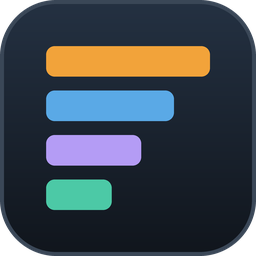

Run your own server
EQSidekick works with the raid server at raid.mazilla.se. A guild that would rather run its own can: it's the same server, and your raid nights, signups and history stay on your machine.
Download the serverOn the release page, under Assets, take EQSidekick-Server-<version>-win-x64.zip.
Free, for Windows, with no database server and no .NET to install. It's offered as it is, without a warranty
or a promise of support.
What you need. A Windows PC or server that is on during raids, and a public https address for it, because players' meters, the phone app and Discord reach it over the internet. Step 3 gives three ways to get one; the simplest needs no domain and no router changes. A Discord application of your own is needed only for the signup bot and phone sign-in.
1. Set it up
Windows marks downloaded files as blocked, so first unblock the zip: right-click it, Properties,
tick Unblock, OK. Unzip it to a folder of its own, say C:\EQSidekickServer,
and run this in PowerShell in that folder:
powershell -ExecutionPolicy Bypass -File .\Setup-Server.ps1 -Guild "Your Guild" -GameServer mischief -Url https://raid.example.com-Guildis your guild's name as the game shows it, and-GameServerthe EverQuest server it plays on.-Urlis the public address from step 3. Decide that first; you can change it later inappsettings.Production.json.- Add
-Task, in PowerShell run as administrator, to start the server with Windows and restart it if it stops. Without it, start it withrun.cmd; it runs while that window is open.
Setup makes appsettings.Production.json, your settings with an admin key it made (keep the file private),
and data\, with the database, the nights and the log. Running it again keeps both as they are.
2. Check it runs
Open http://127.0.0.1:5380/version on that PC. It answers with the server's version. Problems are
written to data\server.log.
3. Put it on the internet
The server only listens on the PC itself. Put one of these in front of it; each also gives you the https certificate.
Tailscale Funnel: no domain, no router changes
Install Tailscale on the PC, sign in, turn on Funnel for your tailnet in its admin page, then run:
tailscale funnel --bg 5380Your address is the https://<pc name>.<tailnet>.ts.net it prints.
Cloudflare Tunnel: your own domain at Cloudflare, no router changes
Make a named tunnel to http://127.0.0.1:5380 for, say, raid.yourguild.com. Quick tunnels
(trycloudflare.com) change address every time they start, so they only suit a test.
Caddy: your own domain, ports 80 and 443 forwarded to the PC
Install Caddy and give it this Caddyfile:
raid.yourguild.com {
reverse_proxy 127.0.0.1:5380
}Whichever you use, it must pass WebSockets through and leave request bodies as they are, because Discord signs them.
All three do. Check that https://<your address>/version answers from a phone that isn't on your Wi-Fi.
4. Your guild's meters and the first officer
Each player opens Share… in EQSidekick and types your address in Raid server. EQSidekick finds the guild from their character's guild.
The first time the server starts, its guild has no officer, and data\server.log has a line like this:
Your Guild on mischief has no officer yet. Officer code ABC-DEF, once, until 2026-11-28: …The guild leader enters that code in EQSidekick: Share…, Guild, tick I'm an officer of this guild, type the code, Use officer code. Each restart shows the same code until someone uses it, and a new one after 7 days. From then on, officers give other officers codes themselves, with Officer code in the same place.
5. Discord and phones (optional)
The signup bot and phone sign-in both use one Discord application of your own.
- At discord.com/developers/applications, choose New Application. From General Information, copy the Application ID and Public Key.
- Under Bot, choose Reset Token and copy the token; Discord shows it once, and it's a
secret. Turn Public Bot off. Turn on Message Content Intent only if your guild will
sign up by typing
!joinin a channel. - Under OAuth2, add
https://<your address>/app/signin-discordto Redirects. Under Client Secret, choose Reset Secret and copy it; that's a secret too. - Fill them in in
appsettings.Production.json, where setup left the places empty, and restart the server:"Discord": { "ApplicationId": "<Application ID>", "PublicKey": "<Public Key>", "BotToken": "<bot token>", "TimeZone": "Eastern Standard Time" }, "App": { "Push": { "Subject": "https://<your address>/app/" }, "Discord": { "ClientSecret": "<client secret>", "RedirectUrl": "https://<your address>/app/signin-discord" } }TimeZoneis a Windows time zone name, used to date the raid channels' names. - Back in the portal, under General Information, set Interactions Endpoint URL to
https://<your address>/discord/interactionsand save. Discord checks it straight away; if it can't, the Public Key or the address is wrong. - Invite the bot to your Discord, with your Application ID in place of
APP_ID:
Then give the bot's role these permissions on a category named Raids, and one named Archive: View Channels, Manage Channels, Send Messages, Embed Links, Attach Files, Read Message History, Pin Messages, Manage Permissions and Connect. Server-wide, give it Move Members, Create Events and Manage Events, for the raids' scheduled events.https://discord.com/oauth2/authorize?client_id=APP_ID&scope=bot+applications.commands&permissions=0 - An officer presses Discord code in EQSidekick (Share…, Guild). It
copies
/setup code:XXX-XXX, which someone with Manage Server runs in your Discord. The raid commands then appear there.
The phone app is then at https://<your address>/app/: sign in with Discord, then install it from the browser.
Sponsored voices and coaching (optional)
A guild's sponsor can pay for Azure voices and coaching after fights for its members. The keys go in
appsettings.Production.json under Sponsors, followed by a restart, and they never leave the
server. GUILD-SETTINGS.md in the zip says who counts as a sponsored member, and how officers publish the
guild's settings.
"Sponsors": { "Guilds": { "mischief/your-guild": { "AzureKey": "…", "AzureRegion": "swedencentral", "AnthropicKey": "…", "CoachingPerMonth": 30 } } }Updating and backups
Each EQSidekick release has a server zip of the same version beside it. Keep the server at least as new as the newest
EQSidekick your guild uses. Stop the server (Stop-ScheduledTask EQSidekickServer, or close
run.cmd), unblock and unzip the new zip over the old folder, and start it again. The zip holds no settings
and no data, so appsettings.Production.json and data\ stay as they are.
Everything lives in data\ and appsettings.Production.json. Copy both somewhere else now and
then; with the server stopped, the copy is exact.
Friends' guilds on your server
Your server can host other guilds too. A guild is only on it if you add it, so you decide whose planning, signups
and history it keeps. With the admin key from appsettings.Production.json (Raid › AdminKey):
$h = @{ 'X-Admin-Key' = '<admin key>' }
Invoke-RestMethod https://<your address>/api/admin/guilds -Headers $h # the guilds
Invoke-RestMethod https://<your address>/api/admin/guilds/requests -Headers $h # guilds that asked from EQSidekick
Invoke-RestMethod https://<your address>/api/admin/guilds -Method Post -Headers $h `
-ContentType application/json -Body '{"name":"Their Guild","server":"mischief"}' # add one; prints its first officer codeLive raid sharing with raid codes works for anyone who has the address, as it does on raid.mazilla.se.